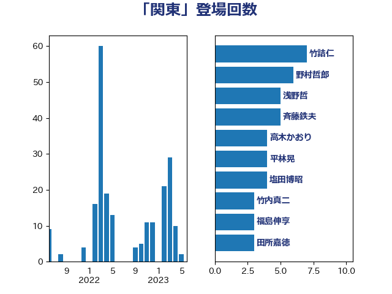

単語「関東」

| 足立康史 | 日本維新の会 | 10 回 |
| 赤羽一嘉 | 公明党 | 7 回 |
| 浅野哲 | 国民民主党 | 5 回 |
| 塩川鉄也 | 日本共産党 | 4 回 |
| 紙智子 | 日本共産党 | 4 回 |
| 高木かおり | 日本維新の会 | 4 回 |
| 上田清司 | 国民民主党 | 3 回 |
| 室井邦彦 | 日本維新の会 | 3 回 |
| 山本太郎 | れいわ新選組 | 3 回 |
| 斉藤鉄夫 | 公明党 | 3 回 |
| 杉久武 | 公明党 | 3 回 |
| 森山浩行 | 立憲民主党 | 3 回 |
| 田村憲久 | 自由民主党 | 3 回 |
| 足立敏之 | 自由民主党 | 3 回 |
| 青木愛 | 立憲民主党 | 3 回 |
| 中野英幸 | 自由民主党 | 2 回 |
| 大島敦 | 立憲民主党 | 2 回 |
| 大野泰正 | 自由民主党 | 2 回 |
| 宮崎政久 | 自由民主党 | 2 回 |
| 小沢雅仁 | 立憲民主党 | 2 回 |
| 小沼巧 | 立憲民主党 | 2 回 |
| 市村浩一郎 | 日本維新の会 | 2 回 |
| 徳永エリ | 立憲民主党 | 2 回 |
| 斎藤嘉隆 | 立憲民主党 | 2 回 |
| 本庄知史 | 立憲民主党 | 2 回 |
| 本村伸子 | 日本共産党 | 2 回 |
| 枝野幸男 | 立憲民主党 | 2 回 |
| 櫛渕万里 | れいわ新選組 | 2 回 |
| 津島淳 | 自由民主党 | 2 回 |
| 福島伸享 | 無所属 | 2 回 |
| 竹内真二 | 公明党 | 2 回 |
| 羽田次郎 | 立憲民主党 | 2 回 |
| 芳賀道也 | 国民民主党 | 2 回 |
| 菊田真紀子 | 立憲民主党 | 2 回 |
| 上野賢一郎 | 自由民主党 | 1 回 |
| 中川康洋 | 公明党 | 1 回 |
| 中西健治 | 自由民主党 | 1 回 |
| 五十嵐清 | 自由民主党 | 1 回 |
| 古賀友一郎 | 自由民主党 | 1 回 |
| 吉田宣弘 | 公明党 | 1 回 |
| 吉田統彦 | 立憲民主党 | 1 回 |
| 吉良よし子 | 日本共産党 | 1 回 |
| 和田政宗 | 自由民主党 | 1 回 |
| 和田義明 | 自由民主党 | 1 回 |
| 坂本哲志 | 自由民主党 | 1 回 |
| 堀内詔子 | 自由民主党 | 1 回 |
| 塩田博昭 | 公明党 | 1 回 |
| 大口善徳 | 公明党 | 1 回 |
| 宮本徹 | 日本共産党 | 1 回 |
| 小宮山泰子 | 立憲民主党 | 1 回 |
| 小島敏文 | 自由民主党 | 1 回 |
| 小熊慎司 | 立憲民主党 | 1 回 |
| 山口壯 | 自由民主党 | 1 回 |
| 岸田文雄 | 自由民主党 | 1 回 |
| 岸真紀子 | 立憲民主党 | 1 回 |
| 平木大作 | 公明党 | 1 回 |
| 志位和夫 | 日本共産党 | 1 回 |
| 有村治子 | 自由民主党 | 1 回 |
| 朝日健太郎 | 自由民主党 | 1 回 |
| 松沢成文 | 日本維新の会 | 1 回 |
| 柴田巧 | 日本維新の会 | 1 回 |
| 根本幸典 | 自由民主党 | 1 回 |
| 横山信一 | 公明党 | 1 回 |
| 深澤陽一 | 自由民主党 | 1 回 |
| 清水貴之 | 日本維新の会 | 1 回 |
| 渡辺周 | 立憲民主党 | 1 回 |
| 熊谷裕人 | 立憲民主党 | 1 回 |
| 牧原秀樹 | 自由民主党 | 1 回 |
| 畦元将吾 | 自由民主党 | 1 回 |
| 福岡資麿 | 自由民主党 | 1 回 |
| 福田昭夫 | 立憲民主党 | 1 回 |
| 秋本真利 | 自由民主党 | 1 回 |
| 稲津久 | 公明党 | 1 回 |
| 空本誠喜 | 日本維新の会 | 1 回 |
| 笠井亮 | 日本共産党 | 1 回 |
| 笹川博義 | 自由民主党 | 1 回 |
| 緑川貴士 | 立憲民主党 | 1 回 |
| 舟山康江 | 国民民主党 | 1 回 |
| 萩生田光一 | 自由民主党 | 1 回 |
| 落合貴之 | 立憲民主党 | 1 回 |
| 蓮舫 | 立憲民主党 | 1 回 |
| 西田実仁 | 公明党 | 1 回 |
| 近藤和也 | 立憲民主党 | 1 回 |
| 遠藤良太 | 日本維新の会 | 1 回 |
| 里見隆治 | 公明党 | 1 回 |
| 野上浩太郎 | 自由民主党 | 1 回 |
| 野中厚 | 自由民主党 | 1 回 |
| 長妻昭 | 立憲民主党 | 1 回 |
| 長谷川岳 | 自由民主党 | 1 回 |
| 阿部知子 | 立憲民主党 | 1 回 |
| 高橋千鶴子 | 日本共産党 | 1 回 |